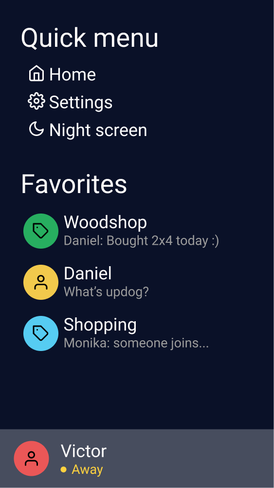
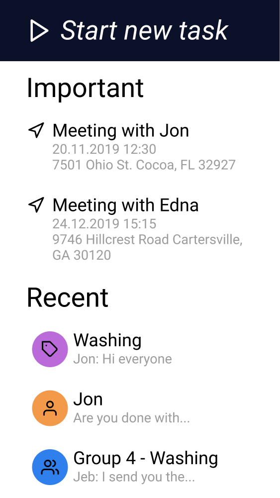
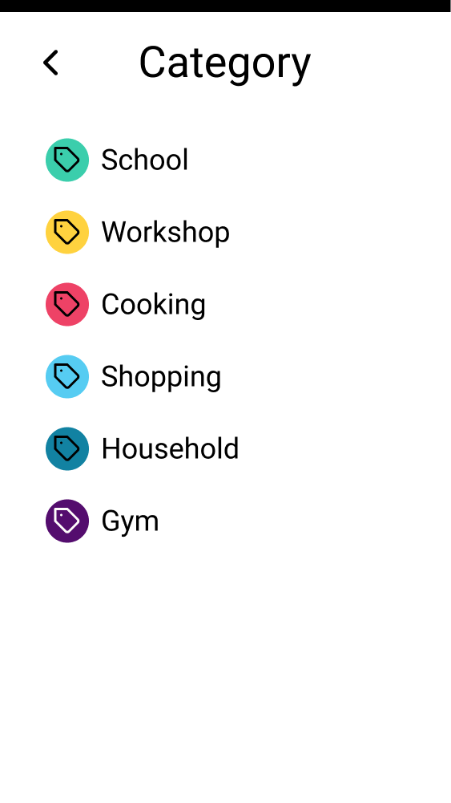
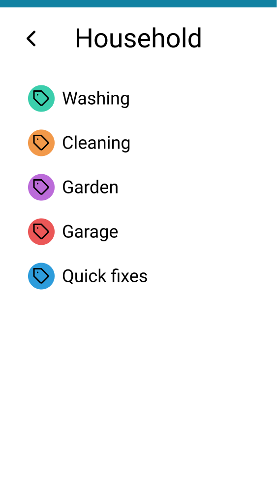
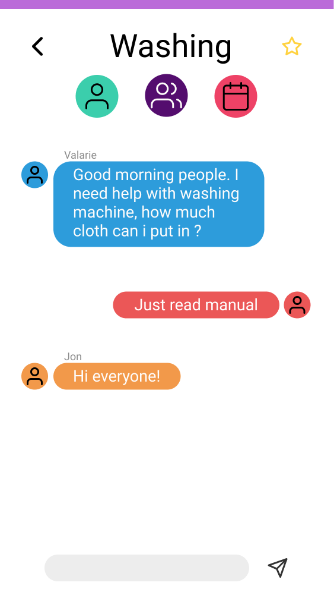
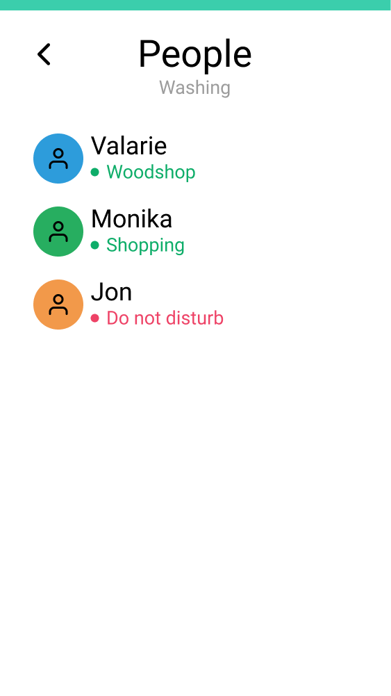
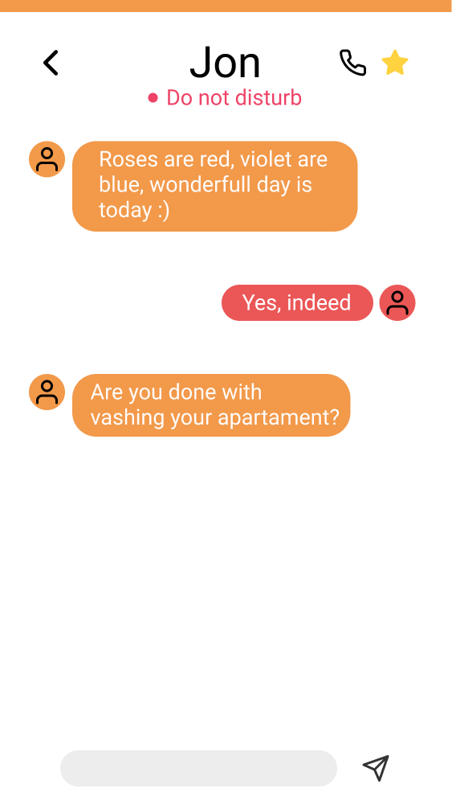
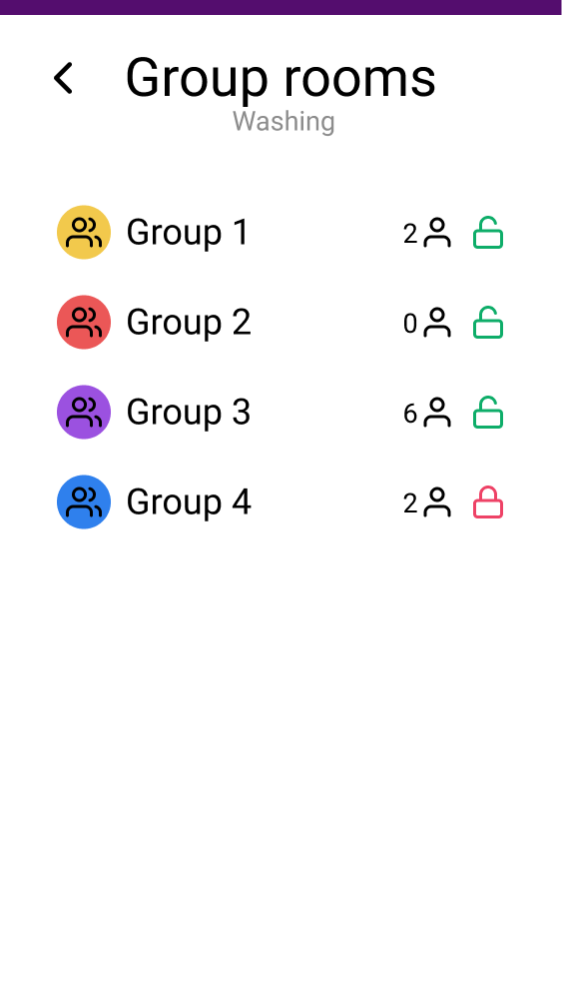
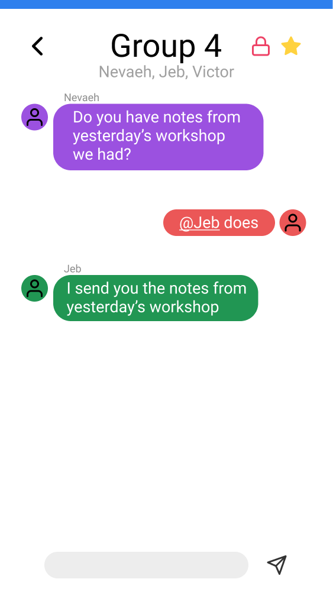
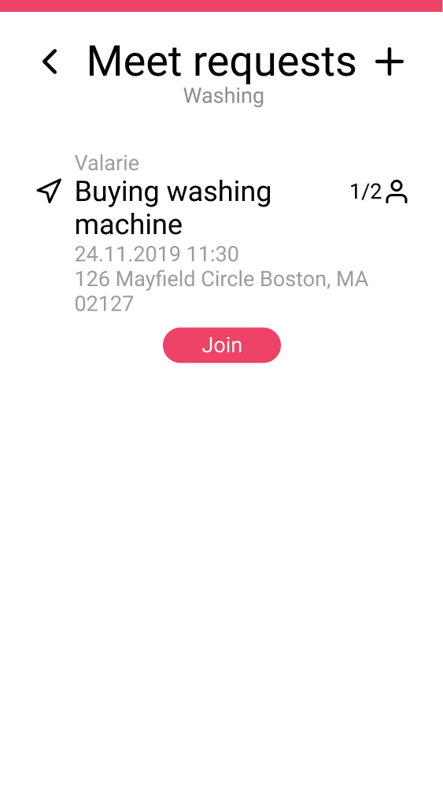

Language:
Language: English -
US
English -
US
 Norsk
Norsk
English -
US
NorskHurtigmenyen er enkelt tilgjengelig meny fra hver enkelte side. Du får tilgang til innstillinger, navigere deg tilbake til hjemmesiden og se dine favorittgrupper og chatter. Med et høyre sveip gjennom skjermen vil Hurtigmenyen vises, Hurtigmeny 1.1
Hurtigmeny 1.1
Hurtigmeny 1.2

Hurtigmenyen gir deg tilgang til innstillinger og nattmodus. Du vil også få lett tilgang til dine favoritt grupper og/eller chatter.
Hjemmesiden varsler deg om nylige og viktige aktiviteter som nærmer seg.
Dette er siden du kommer til å se etter å ha trykket på pilen på toppen av hjemmesiden. Her kommer du til å få muligheten til å velge mellom kategorier som du vil møte mennesker fra.
Oppgave Start 2.1

Her har du muligheten til å velge kategorien du vil fortsette med.
Etter å ha valgt kategorien av ditt ønske, vil du bli møtt av nye underkategorier. Her vil du kunne velge presist hva du ønsker.
Valgt Kategori 3.1
Valgt Kategori 3.2

Her har du muligheten til å velge den ønskede oppgaven som du er interessert i.
Etter at du har valgt den ønskede underkategorien, vil du koble deg til en global chat.
Her har du muligheten til å bli med i en privat chat med noen du har møtt i den globale chatten. Her kan dere to snakke mer sammen om interesser og bli bedre kjent med hverandre.
Global Privat 4.1
Global Privat 4.2
Global Privat 4.3

Fra den Globale chatten har du muligheten til å velge den turkise knappen på toppen av siden.
Etter å ha klikket på den turkise knappen vil du få en liste med mennesker som er pålogget og i samme område som deg.
Etter å ha valgt ønsket person vil det bli opprettet en privat chat mellom dere, og dere vil kunne snakke sammen.
Her vil du kunne ha muligheten til å bli med i en gruppechat med mennesker du har møtt i den Globale chatten. Dette er ment til å fungere som et grupperom, hvor alle mennesker i gruppen kan snakke sammen om like interesser.
Global Gruppe 5.1
Global Gruppe 5.2
Global Gruppe 5.3

Fra den Globale chatten, har du muligheten til å velge den lilla knappen på toppen av skjermen.
Etter å ha klikket på den lilla knappen, vil du få en liste med grupper som er pålogget, og som du har muligheten til å bli med i.
Etter å ha valgt ønsket gruppe, vil du bli med i gruppechatten og dere i gruppen kan snakke sammen.
Med Møte Forespørsel kan en publisere et forespørsel til å møte noen eller bli med andre til å samarbeide i virkeligheten.
Møte Forespørsel 6.1
Møte Forespørsel 6.2

Fra den Globale chatten har du muligheten til å velge den rød knappen på toppen av skjermen.
Her vil du se åpne møte forespørsler som du kan bli med på. Her kan du også lage dine egne møte forespørsler.